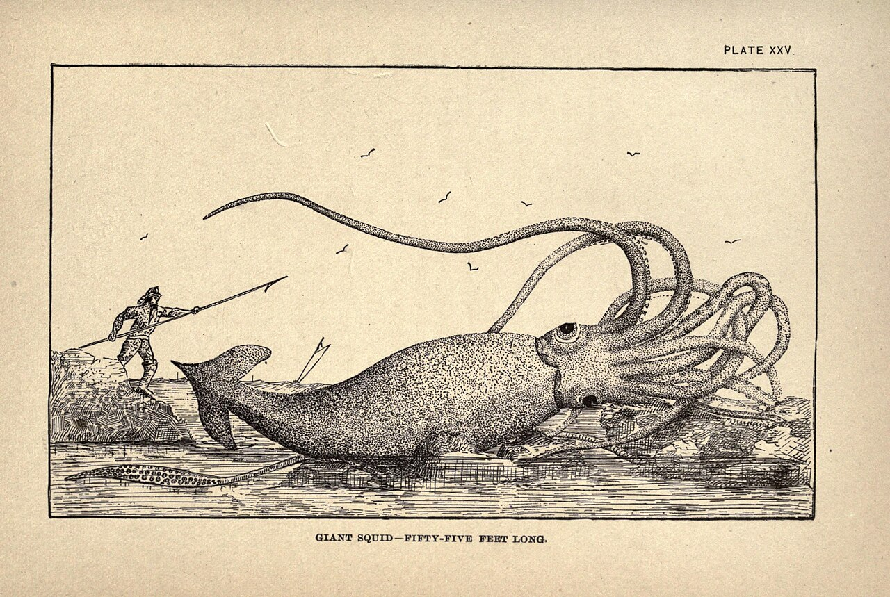
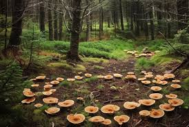
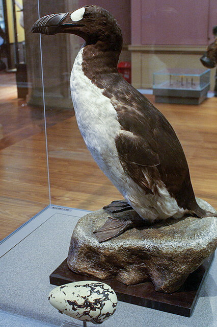
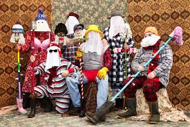

Whispers of the Coast
Step into a world where the fog hides giants and the meadows belong to the Fair Folk.
The Beast of Glover's Harbour
In 1878, a colossal creature was found on the shores of Newfoundland at a place called Thimble Tickle. The Giant Squid, or "Architeuthis," long thought to be a sailor's myth, became a reality. Reported at 55 feet long, these "Kraken" were said to drag entire boats beneath the waves during the thick Atlantic fog.

The Old Hag
Ever woken up unable to move? Locals call it "being hag-ridden." Legend says an invisible spirit sits on your chest to keep you in bed!

Fairy Circles
In the wild barrens, circles of mushrooms or stunted grass mark where the Little People dance. Don't step inside, or you might be "spirited away" for a hundred years!
lightbulb PRO TIP: Carry bread in your pocket to stay safe!
The Burning Ship
Fishermen in the Gulf of St. Lawrence still report seeing a three-masted schooner engulfed in flames that never sinks and never reaches the shore.
Jacky Lanterns
Floating lights in the marshes that lead weary travelers off the path and into the bogs.

The Great Auk
The spirit of this extinct flightless bird is said to still guard the Funk Islands.

Mummers
Disguised strangers who visit homes at Christmas, dancing and playing tricks until they're guessed!
touch_appThe Mummers
- Disguise everything — even your voice! Mummers speak in high squeaky voices called "mummers talk" so neighbours can't recognise them.
- Wear your clothes backwards. Inside-out clothes, wigs, pillows stuffed under shirts, and painted faces were all fair game to throw people off.
- It was once illegal! In 1861 Newfoundland passed a law banning mummering after a murder by disguised mummers caused a panic. The ban was eventually lifted.
- Guess right and earn a treat. Homeowners had to figure out who the mummers were — once guessed, the mummers revealed themselves and everyone shared food and drinks.
- It came from across the ocean. Mummering started in medieval Britain and Ireland — Irish and English settlers brought it to Newfoundland over 400 years ago, and Newfoundland kept it alive long after the rest of the world forgot it!